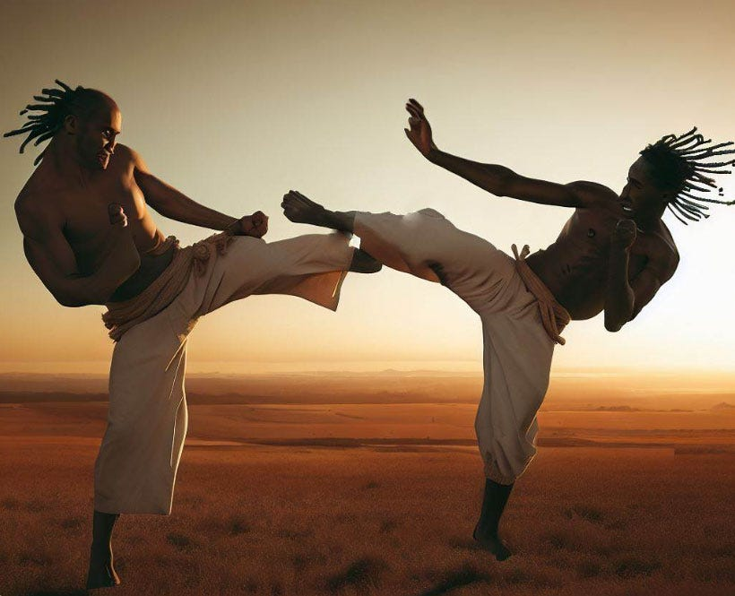

Capoeira Dos Grandes
A capoeira surgiu como resposta a violência a qual os escravizados eram submetidos em tempos coloniais e imperiais no Brasil. A partir de golpes e movimentos corporais ágeis, a luta permitia que eles se defendessem das brutais perseguições dos capitães do mato, cuja atribuição era capturar quem havia fugido.